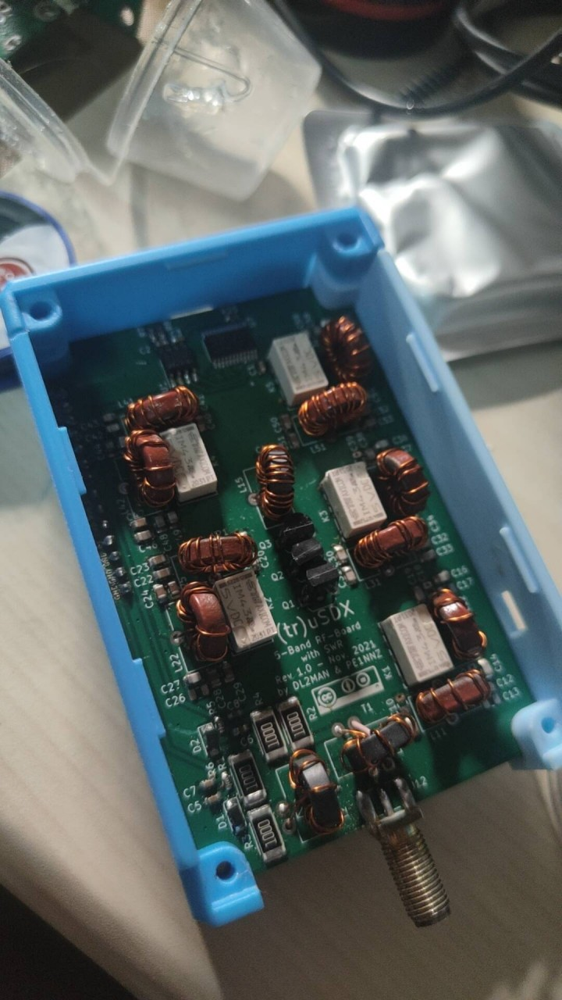

免责声明：本推荐文档版权归西电无线电社团所有，本程序得到非正式授权后进行转载，请用户不要任意转载。以下内容和本程序无关，开发者对下面内容无任何担保。
英雄潜伏在敌人的心脏，用灵活的手指敲打着电键，传递出生死攸关的重要情报——如果你是谍战片的忠实粉丝，一定会对这样的桥段心驰神往。你是否也曾幻想过，有朝一日也能像谍战片里的传奇英雄一样拥有一部属于自己的电台，在危难时刻担起重任，于空中搭建起通信桥梁，守护信息与情报的生命线？
《永不消逝的电波》剧照
实验室里，示波器跳动的波形诉说着无声的秘密，课本上的一行行公式揭示出一个无形世界的运转规律。你是否也曾想亲手拨动电磁波那“看不见的琴弦”，尝试运用书页中的理论，将脑海中的奇思妙想变成现实，设计出属于自己的天线亦或收发装置？
图源：美国新泽西州业余电台 K2RRB个人主页
广袤的世界有太多我们此生难以踏足的角落，太多我们此生难以接触的有趣灵魂。你是否渴望用电波丈量无尽的远方，与万里之外的陌生人建立友谊，在交谈中锤炼语言能力，增长知识与见闻，乘着电波欣赏北极圈舞动的绚丽极光与南极洲亘古不化的壮阔冰原，感受太平洋小岛的潮起潮落，甚至聆听来自空间站宇航员的亲切问候？
图源：挪威业余电台LA9AKA个人主页
如果你做出了肯定的回答——那么，欢迎加入“半部电台”业余无线电社的大家庭！我们是今年新近成立的新社团，主要聚焦于业余无线电这一具有悠久历史的独特爱好，是西电业余无线电爱好者的活动与技术交流圣地。对大部分人来说，作为一种前互联网时代的通信手段，无线电似乎已经是一个只出现在影视作品、历史故事或《使命召唤》《战地》一类的军事题材游戏里的遥远领域；但在这里，无线电将不再是书本上冷冰冰的名词和故纸堆里的陈年旧事，我们将让无线电成为触手可及的温暖领域，带你手把手探索电波世界！
业余无线电是一项不以获取商业利益为目的，供爱好者进行自我训练、相互通信与技术研究的无线电通信业务，爱好者通过购买或自制的无线电设备从事无线电收信与发信等实践活动，在此过程中学习技术、提升自我、并为社会提供一定程度的公共服务与应急保障。
业余无线电是一项受法律保护的正规活动——但相应地，就如同开车需要考取驾驶执照并为车辆办理行驶证一样，由于无线电技术的特殊性，需要考取业余无线电操作证方能操作业余电台，向无管部门申请并取得无线电台执照方可正式设立业余无线电台站，并获取世界唯一、绝不重复的业余无线电呼号。不过不必担心——只要你认真准备，考证难度可以说是“手到擒来”，且由西安无线电通信学会组织的历次业余无线电考试均不收取任何费用！
副社长BI9AAZ的业余无线电操作证书与无线电台执照
业余无线电爱好者被称作“火腿”（HAM）——这本是1910年代专业报务员用于嘲讽业余无线电爱好者“发报手法笨拙”的揶揄之词，但如今已经褪去贬义，成为了业余无线电爱好者们为之自豪的代号。“业余”二字并非是“学艺不精”的代名词，而是强调其“非盈利性”“非职业性”，将其与商业广播电台、海事/航空通信等专业无线电领域相区分。事实上，有些业余无线电爱好者的理论与实践水平甚至强于专业通信工作者，这也是为什么HAM一词的贬义最终随着时间的推移消失无踪。
HAM——一个令业余无线电爱好者自豪的称呼
在我国历史上，“火腿”群体可谓群星闪耀。他们中藏有许许多多的“技术大牛”与“无名英雄”，曾在国家民族危亡之际与意外天灾降临之时，为救亡图存、抢险救灾立下过不可磨灭的功勋。抗日战争时期，业余无线电爱好者集体向政府请愿并组成战时服务团，以所掌握的通信技术积极援助抗日救亡工作，甚至直接奔赴前线参加战斗；解放战争时期，一些爱好者也在保卫新生政权、剿匪、打击国民党反动势力等方面做出了巨大贡献。进入和平年代，2008年汶川地震发生后，业余无线电爱好者们自发组成应急通信网，以BY8AA作为主控台积极参与通信调度工作，在抗震救灾中做出了突出贡献。他们用自己掌握的过硬技术守护家园，以崇高的情怀担负起社会责任与天下兴亡，值得我们景仰与学习。
四川省业余无线电应急通讯网指挥中心
而作为一所自建校起便与无线电技术结下不解之缘的学校，纵览西电校史，其中同样处处可见与业余无线电相关的片段。在艰苦的战争年代，我校第一任校长王铮将军与延安通校教员，隐蔽战线传奇人物涂作潮先生都曾在精进通信技术的过程中阅读并学习过《业余无线电手册》等科技书籍，他们设法为敌后根据地筹集通信器材的过程也离不开民间业余无线电爱好者的帮助。毕德显院士和他的研究生导师都是业余无线电爱好者，他们曾经一起动手制作过业余无线电收发报机收听抗日救亡广播并进行宣传，还曾试图秘密组装收发报机运往延安根据地。军委三局通信学校教员、红旗一号导弹总设计师钱文极先生曾与同学们共同组织业余无线电研究会，他在这里学到的无线电知识为他一生从事的革命事业奠定了良好的专业基础。我们大家都熟悉的“星火杯”竞赛起源自学生队伍——一支在西安街头为群众维修家电的“大学生家电维修服务队”，这支队伍的成员正是校内一群热心肠的业余无线电爱好者前辈。一代代无线电人用他们对技术的赤诚热爱，串联起西电的光辉校史——而我们，则以象征起源的“半部电台”为名，将他们的这份热爱与伟大的红色通讯精神传承下去。
由左到右分别为王诤将军、涂作潮先生、毕德显院士、钱文极总师。
业余无线电活动开展的形式实在太多太多。具体而言，加入我们，你就能体验到如下丰富多彩的内容（包括且不限于此），并从中找出你最热爱的无线电领域，发掘出自己最纯粹的快乐：
新手入门往往是从工作于U/VHF频段，最简单的手持发射设备开始——也就是通俗意义上的“对讲机”。通过直接发信与中继转发两种方式，广大HAM可以与几公里乃至几十上百公里范围内的本地友台进行通联，交流各种话题。本地HAM社群内时常会举办“例行点名”等活动，每次都能吸引数十甚至上百位台友参与其中齐聚一堂，你可以抓住机会与他们建立通联。此外，作为本地应急通信保障的重要力量，有时中继台还会举办应急通信演练等活动，以培养本地的应急救灾中坚力量。如果你对应急通信感兴趣，那你可千万不要错过！
上图是新疆克拉玛依市的HAM正在进行应急演练——而作为无线电爱好者团体的我们，也曾在秦岭南五台等地主持过点名等本地范围的无线电集体活动。
当你成功考取更高等级的操作证书，远距离通信的大门便向你敞开。射向天空的短波信号能够被电离层所反射，从而传到数千甚至数万公里的远方，通过这种方式，HAM们能够与位于全球各个角落，各个国家与地区，说不同语言的爱好者进行沟通与交流，去见证未知的风景与文化，并设计交换具有个人特色的通联确认卡片作为留念。DX爱好者们以通联到更远、更稀有的电台为荣。理论上，只要传播条件够好，你甚至可以联络到地球背面南美洲的友台——真正的“全球通，通全球”！
来自“半部电台”社群的HAM友人们正在共同架设短波电台天线
来自日本的爱好者寄来的通联确认卡片
无线电最本质的用途之一便是相互沟通交流，而这也将在爱好者之间架起社交的桥梁。在遵守通联规范，不长时间占用热门频率妨碍他人通联乐趣的前提下，与其他电台建立联络，交换信号报告，互寄通联确认卡片，交流与分享日常生活与技术话题，并最终建立友谊的过程，往往是广大HAM从无线电中获取乐趣的最初形式。而无线电信号的传播特性也决定了这注定是一项与户外活动紧密关联的兴趣爱好——和一群挚友约定好时间和地点，三五成群，带好户外装备与无线电设备，前往户外边露营边通联边谈天说地，多么的快乐与惬意！
2025.1.1 “半部电台”社群野外架台活动留念
如果你是“复古派”，就喜欢那些传统而古老，活在影视作品与历史资料里的“硬核通信方式”，又或者说你热爱谍战片，想效仿谍报人员从敌阵中传递情报的飒爽英姿，那就快来试试滴滴答答的等幅莫尔斯电报吧！这种最古老传统但又最简单可靠的通信方式，因其极窄的带宽、极强的抗干扰能力与通用性，被视为应急通信与军队通信的“最后手段”。上手有些难度——但绝对够硬核！
通信兵出身的退休教职工倪伟老师正在使用莫尔斯电码进行通联
太空中的宇航员和卫星是通过什么与地面进行联络的？没错，自然是无线电波。有那么一群“追星族”HAM，他们天天扛着样式奇怪的定向天线出门“打卫星”，把打交道的对象从地面上的友台和中继延伸到了地球以外。他们通过业余无线电卫星上搭载的转发器进行远程联络，想方设法同空间站里喜欢业余无线电的宇航员进行交流，甚至还有的人同高校和航天机构合作，发射了由爱好者群体设计制造的业余无线电卫星。如果你对浩瀚的星空，天文知识与航空航天感兴趣——那就快来尝试一下这个领域吧！
业余卫星通信所使用的八木天线
有的人并不是那么在乎自己的信号究竟能传多远——但他们爱“折腾”，爱实验，拥有过硬的通信与电子电路理论，想要学习当年延安通校的前辈们，以“自己动手，丰衣足食”的精神自制与改造属于自己的收发设备与天馈系统。如果是这样，那么欢迎加入“DIY族”的行列！想想看吧，用亲手打造的设备通联远方的友台，该是多么的别有风味，令人自豪？
由“半部电台”社群的爱好者自制的微型短波发射机truSDX
解放初那段反间防谍的关键时期里，民兵队伍是如何搜捕潜伏特务私藏的电台的？无管部门又是怎样查处那些隐蔽而猖獗的“黑广播”的？想搞清楚这些问题，就来体验一下无线电测向吧！这门国防体育运动本质上是一场“没有硝烟的电子战演习”，精通了它，你也能够在无线电的世界里搜寻狡猾的“狐狸”，获得维护频谱秩序，守护国家安全的能力！
2015年6月6日，由电子工程学院主办的无线电测向比赛照片
我们想做这些事情。
如果你已经被这些丰富多彩的活动所吸引，想要加入业余无线电的大家庭；亦或是你早已畅游于缤纷的电波世界并乐在其中，渴望在校园里找到组织——那么欢迎扫描下方的二维码加入“半部电台”业余无线电社，开启属于你的无线电征程，让西电的红色电波再度传遍大江南北，焕发新的生机！